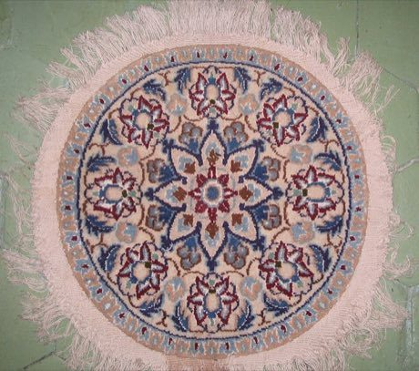
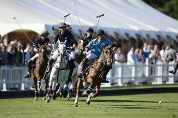
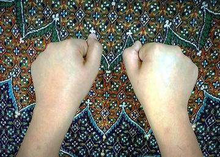

Home / Living Traditions / Persia, Caucasus and Central Asia
Playable heritage gamePersian Carpet Knotting
Also known as فرش دستباف
A hand-knotted carpet is built one knot at a time: the weaver follows a coloured chart in which every square stands for a single knot of dyed wool. Medallions, borders, garden layouts and leaf-like boteh shapes grow from the middle outward, the same on every side.

How to play
- Pick a wool colour and a shape from the strip under the chart: solid knots, diamonds, stars, leaves, rings and hexagons.
- Tap a square to tie a knot: the knots on the other three sides and the mirrored corners follow, so the chart stays balanced.
- Copy the small chart above, then press Check.
Rules at a glance
- The chart is balanced in four turns and in mirror image, as carpet fields are.
- A square scores only when its shape and its wool colour both match the chart.
- Tying the same shape and colour again, or using the eraser, removes the knot.
- Three stars need a near-perfect copy; undo and clear are free.
About the tradition
Carpet weaving has been practised for centuries in towns, villages and tribal camps across Iran and Turkey, each region with its own colours and layouts, and it is still a major household and workshop craft.
Origins
A living tradition passed from person to person; it is not tied to a single dated origin. It belongs to the cultural world of Persia, Caucasus and Central Asia.
Credits
- Pattern design: World Heritage Games (original)
- Photo: Fabienkhan, CC BY-SA 3.0, source on Wikimedia Commons
- Text: CC BY-SA 4.0, World Heritage Games.
Sources

Get the app
Persian Carpet Knotting is coming to the App Store and Google Play. One app, many traditions, no account needed.
Included in Textile Crafts of the World
More games to play


More from Iran

Astrolabe: reading the sky
Iran · Toys
Badgir windcatcher cooling puzzle
Iran · Crafts and making


Flower or Empty
Iran · Street and playground games